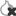

Anonimnost i privatnost na internetu
Autor: Mario Vilaj
Sadržaj |
Uvod
Anonimnost i privatnost na internetu u današnje vrijeme su važne teme i svaki napredniji korisnik računala se prije ili kasnije zapita koliko se te teme tiču njega samoga, odnosno koju razinu anonimnosti i privatnosti on zadržava u trenutku kada pristupi nekom internetskom servisu. Osim naprednih korisnika, koji su više ili manje upućeni u problematiku ovoga teksta, sve više korisnika koji imaju osnovnu razinu informatičke pismenosti brinu pojmovi anonimnosti i privatnosti na internetu. Mogli bi reći da je sve započelo nastajanjem društvenih mreža kao što su Facebook i nekad popularan MySpace, kao jednih od prvih društvenih mreža koje su potaknule veliku količinu ljudi da kupi računalo, poveže ga na internet i počne koristiti internetske servise. Količina korisnika društvenih mreža je iz godine u godinu sve više rasla, da bi se nekoliko godina kasnije u društvu pa i u medijima počelo sve više slušati o pojmovima internetske privatnosti i anonimnosti. Osim provjerenih podataka o načinu na koji društvene mreže koriste podatke koje im njihovi korisnici "serviraju", u medijima su se pojavljivale različite "teorije zavjere", koje su alarmirale javnost da podaci koje korisnici ostavljaju na internetu ne samo da se ne brišu, već da ostaju zauvijek spremljeni u nečijim podatkovnim bazama te da se s njima rade različite društvene analize i povezivanja podataka sa identitetom stvarne osobe. Danas, možemo sa sigurnošću reći da se takvi podaci koriste najviše u svrhu zarade pomoću marketinških kampanja i da se na neki način prodaju. Međutim, korisnici vjerojatno nikad neće biti u potpunosti sigurni gdje se sve čuvaju njihovi podaci i u koje svrhe se upotrebljavaju. Drugim riječima, korisnik svojim korištenjem internetskih usluga na internetu ostavlja veliku količinu podataka o svojim navikama, željama, načinu života, obrazovanju, zanimanju, osobnim stavovima, obitelji, lokaciji stanovanja, financijski osjetljive podatke kao što su banke u kojima ima otvorene račune i druge podatke o kojima možda ni nismo svjesni. Ti podaci ne samo da su dobro spremljeni na nečijim internetskim serverima, već često i na korisnikovom računalu, što ponekad predstavlja i veći rizik, s obzirom da su podaci koje poduzeća spremaju na internetu često zakonski regulirani. Ovaj rad bavit će se problematikom osiguravanja korisničke anonimnosti i privatnosti na internetu. U današnje vrijeme možemo biti zahvalni da postoji dovoljan broj komercijalnih i besplatnih alata koji mogu poslužiti prosječnim i naprednim korisnicima da osiguraju svoju anonimnosti i privatnost na internetu te da na neki način zaštite vlastiti identitet od krađe i spriječe zloupotrebu osobnih podataka.
Razlika između anonimnosti i privatnosti
Anonimnost i privatnost nisu pojmovi koji se odnose na iste stvari. Naime, anonimnost se praktično odnosi na nastojanje da očuvamo tajnost vlastitog identiteta, dok se privatnost odnosi na čuvanje tajnosti podataka koje prenosimo. U pogledu anonimnosti to znači da ukoliko određeni subjekt, možemo ga nazvati napadačem (iako ne mora značiti da je riječ o napadu), dođe do podataka koje nismo adekvatno zaštitili, tada neće postojati trag pomoću kojeg taj subjekt može doći nas, odnosno našeg identiteta. U slučaju kada štitimo privatnost, tada štitimo tajnost podataka koje prenosimo putem nekog internetskog servisa na način da napadač kada dođe do tih podataka neće ih moći raspoznati (dešifrirati), odnosno neće moći otkriti što oni zapravo predstavljaju. Poznavanje razlike između anonimnosti i privatnosti vrlo je bitno ukoliko su podaci koje prenosimo internetom osjetljive prirode, činimo radnje koje mogu ugroziti našu sigurnost (ovdje se ne misli na protuzakonite radnje, što nije predmet ovoga rada) ili jednostavno želimo izbjeći da naši podaci završe kod treće strane, s kojoj nismo namjeravali te podatke podijeliti. Često se pojmovi anonimnosti i privatnosti smatraju sinonimima, pa ponekad korisnici koristeći softver za osiguravanje anonimnosti (primjerice, Tor), misle da su potpuno sigurni i u pogledu anonimnosti i privatnosti komunikacije koji uspostavljaju. Budući da je takva zabluda česta, u ovome radu će se nastojati uspostaviti jasna granica između ta dva pojma.
Tor
Jedan od najraširenijih i najpoznatijih alata za osiguravanje anonimnosti je Tor (The Onion Router). Tor je distribuirana mreža računala, odnosno servera, koji su konfigurirani tako da zajednički rade u svrhu osiguravanja anonimnosti korisnika čija računala se spajaju na Tor mrežu. Tor radi na način da se spajanjem na Tor mrežu između klijenta i Tor servera stvara skupina virtualnih tunela kroz koje se ostvaruje komunikacija. Tor server koji je dio Tor mreže zove se Tor relay. Tor osigurava anonimnost skrivanjem IP adrese računala na način da računalo koje je primilo poruku dobiva informaciju je poruka poslana s IP adrese zadnjeg računala u Tor mreži (exit node). Komunikacija unutar Tor virtualnih tunela je kriptirana, što znači da su podaci koji prolaze kroz Tor mrežu zaštićeni od neovlašenog čitanja. Međutim, postoji problem u osiguravanju konzistentnosti zaštite tih podataka, a taj problem je u komunikaciji između exit nodea Tor mreže i destinacije, odnosno računala do kojeg ti podaci moraju stići. Naime, komunikacija između exit nodea i računala do kojeg se podaci prosljeđuju nije kriptirana pa postoji opasnost da maliciozan exit node promatra promet koji prolazi kroz njega i analizira podatke koje je na taj način prikupio. Jedini način da se korisnik zaštiti od takvih situacija je korištenje HTTPS-a ili drugih tehnologija end-to-end enkripcije.
U nastavku je slikovito prikazan način na koji funkcionira Tor mreža. Prvi korak je da Tor klijent dohvaća listu Tor nodea.
{kind=link}
{kind=link}
Sljedeći korak je odabir proizvoljne putanje korištenjem Tor nodeova od klijenta do destinacije. Na slici su zeleno prikazane veze unutar kojih je komunikacija kriptirana, dok je crveno prikazana veza unutar koje komunikacija nije kriptirana.

{kind=link}
Putanja koju je klijent jednom izabrao za komunikaciju nije stalna, već se mijenja, u prosjeku svakih desetak minuta.

{kind=link}
Mijenjanje putanje povećava sigurnost Tor mreže, ali u svakom slučaju se ne preporuča korištenje Tor mreže za razmjenu osjetljivih informacija i korištenje servisa poput internet bankarstva jer je Tor mreža podložna man-in-the-middle napadima, što dokazuje istraživanje jednog blogera.
Tor mreža funkcionira na principu tzv. onion routinga. Onion routing je tehnika kojom se anonimizira komunikacija putem računalne mreže, a zasniva se na enkapsulaciji poruke putem slojeva enkripcije, što podsjeća na slojeve luka (onion). Unutar Tor mreže kriptirani sadržaj putuje kroz niz Tor nodova (koji se još nazivaju onion routerima) i svaki od njih skida jedan sloj enkripcije, u kojemu je zapisana destinacija sljedećeg Tor noda na koji se mora proslijediti poruka. Kada je posljednji sloj dekriptiran, poruka stiže na predviđenu destinaciju. Pošiljatelj poruke ostaje anoniman jer svaki posrednik u prijenosu poruke zna samo lokaciju prethodnog i sljedećeg posrednika (noda) (Wikipedia: Onion routing, https://en.wikipedia.org/wiki/Onion_routing).
{kind=link}
{kind=link}
Korištenje: Jedan od najjednostavnijih načina na koji se može koristiti Tor je preuzimanje Tor Browsera sa službene stranice TorProject.org. Nakon preuzimanja instalacije, otvaramo Tor Browser koji smo unaprijed instalirali na željenu lokaciju. Otvara se preglednik baziran na Mozilla Firefoxu i možemo započeti sa surfanjem.
{kind=link}
Korištenjem Tora nismo zaštitili cjelokupnu komunikaciju od našeg računala prema internetu, već samo komunikaciju koja se ostvaruje putem aplikacija koje su pravilno podešene tako da šalju svoj internet promet kroz Tor (primjerice, Tor Browser).
VPN
VPN (Virtual Private Network) je tehnologija kojom možemo osigurati vlastitu anonimnost i privatnost na internetu. VPN kreira virtualni tunel unutar kojeg je komunikacija kriptirana i kroz njega se odvija cjelokupna komunikacija od računala prema internetu. VPN se često koristi kako bi pristupili udaljenim mrežnim resursima kao da su na istoj lokalnoj mreži na kojoj je računalo s kojeg pristupamo. To nam omogućava pristup mrežnim resursima kao što su pisači, serveri i druga računala. Primjerice, putem VPN-a možemo od kuće udaljeno upravljati računalima koja se fizički nalaze u uredu. Druga česta primjena VPN-a je u situaciji kada računalo spajamo na javnu mrežu odnosno mrežu kojoj ne vjerujemo. Tada koristimo VPN kako bi spriječili eventualno presretanje naše komunikacije s obzirom da smo u nesigurnoj mreži.
Način na koji radi VPN je sljedeći. Nakon pokretanja VPN klijenta na računalu, prijavljujemo se sa svojim podacima, nakon čega se uspostavlja kriptirani virtualni tunel između našeg računala i VPN servera na koji se spajamo. Za računalo s kojim komuniciramo na internetu naša IP adresa je skrivena i ono umjesto naše IP adrese vidi IP adresu VPN servera putem kojeg se ostvaruje komunikacija. Sva komunikacija od računala koje je pošiljatelj do VPN servera je kriptirana, što znači da nije podložna oblicima napada kakvi su mogući kod korištenja Tor mreže. VPN uslugu možemo zatražiti kod pružatelja VPN usluga, od kojih ih je većina komercijalna, ali ima i besplatnih rješenja. Jedina stvar koja je bitna kod različitih pružatelja VPN usluga su njihovi uvjeti korištenja, što se uglavnom odnosi na logove, odnosno podatke nastale korištenjem usluge koje pojedini pružatelji VPN usluga zadržavaju o svojim korisnicima. Naime, u određenim državama svijeta postoji zakonska obveza da pružatelji VPN usluga vode evidenciju o korištenju usluga svojih klijenata, što može značiti da će se u slučaju sudskog postupka podaci o pristupljenim stranicama i korisničkim radnjama dati na uvid. Jedini način da se izbjegne takva situacija je odabir pružatelja VPN usluge čiji se serveri nalaze u zemljama koje zakonski ne nalažu bilježenje logova.
Slika prikazuje primjer korištenja VPN-a u svrhu pristupa udaljenoj lokalnoj mreži i njezinim resursima.
{kind=link}
{kind=link}
Proxy
Za anonimni pristup internetu možemo koristiti proxy server. Proxy server, slično kao i VPN, posreduje u komunikaciji između računala koje je pošiljatelj do računala primatelja i čuva anonimnost pošiljatelja skrivanjem njegove IP adrese. Najviše se koriste proxy protokoli SOCKS i HTTP/HTTPS, s time da SOCKS i HTTP ne pružaju enkripciju dok HTTPS proxy pruža istu razinu enkripcije kao i bilo koje SSL web mjesto (privateinternetaccess.com: What is a Proxy?, https://www.privateinternetaccess.com/pages/tor-vpn-proxy). Da bi koristili proxy moramo podesiti svaku pojedinu aplikaciju da pristupa internetu putem proxyja.
Tails
Tails je live operacijski sustav namijenjen prvenstveno zaštiti anonimnosti jer je baziran na Tor mreži. Budući da je Tails live operacijski sustav, možemo ga pokrenuti s USB-a, CD-a ili virtualnog stroja. Tails dolazi s već predinstaliranim alatima za anonimni pristup internetu kao što je Tor Browser, Pidgin za siguran chat, sadrži i bitcoin wallet te osnovne alate kao što su alati za obradu teksta, slike, zvuka i druge alate. Sva komunikacija i svi alati unutar operacijskog sustava Tails podešeni su da internetu pristupaju preko Tor mreže. Tails možemo koristiti kako bi u potpunosti anonimno surfali te otvarali datoteke koje smo preuzeli s interneta bez bojazni da će se nekome poslati podaci pomoću kojih nas se može identificirati.
Neki od alata u Tailsu su:
- Tor
- Tor Browser
- Pidgin za chat
- Icedove email klijent
- Gobby za kolaborativno pisanje tekstualnih dokumenata
- Aircrack-ng za procjenu sigurnosti bežičnih mreža
- I2P anonimizacijska mreža
- Electrum bitcoin klijent
- LibreOffice
- alati za obradu slike, zvuka i filmova (GIMP, Audacity, PiTiVi, Traverso)
- LUKS i GNOME Disks za instalaciju i korištenje kriptiranih uređaja za pohranu
- GnuPG za implementaciju OpenPGP-a za enkripciju i potpisivanje emaila
- PWGen generator lozinki
- Florence virtualna tipkovnica (način zaštite od keyloggera)
- MAT za anonimizaciju metapodataka u datotekama
- KeePassX upravitelj lozinkama
- GtkHash za izračun checksumova
- Keyringer, Paperkey, AppArmor (izolacija aplikacija) i drugi alati
Prije korištenja Tailsa na umu moramo imati sljedeće činjenice:
- Tails ne štiti od kompromitiranog hardvera
- Tails može biti kompromitiran ukoliko je instaliran na nepovjerljivim sustavima
- Tails ne štiti od BIOS ili firmware napada
- Tor exit nodovi mogu prisluškivati komunikaciju
- Korištenjem Tailsa pružatelj internetskih usluga zna da koristimo Tor odnosno Tails
- Korištenjem Tailsa postoji mogućnost man-in-the-middle napada
- Tails nas ne štiti od confirmation napada (end-to-end korelacija, promatranje i usporedba prometa koji ulazi i izlazi iz Tor mreže)
- Tails ne kriptira korisničke dokumente prema zadanim postavkama (default)
- Tails ne čisti metapodatke iz korisničkih dokumenata i ne kriptira predmet i druga zaglavlja kriptirane elektroničke pošte
- Tor ne štiti od globalnih napada (monitoring prometa između svih računala u mreži)
- Tails ne razdvaja različite kontekstualne identitete korisnika (za mijenjanje identiteta potrebno je napraviti restart Tails OS-a)
- Tails ne može loše lozinke učiniti jačima
- Tails je alat u razvoju
(Izvor: Tails Documentation: Warning, https://tails.boum.org/doc/about/warning/index.en.html)
Korištenje Tailsa
Tails možemo preuzeti sa službene stranice tails.boum.org. Kao što je prethodno spomenuto, Tails je live operacijski sustav i možemo ga pokrenuti s CD-a, USB-a ili virtualnog stroja. Nakon pokretanja, prikazuje nam se sljedeći zaslon gdje nam se nudi način na koji želimo pokrenuti Tails:
{kind=link}
Odabiremo live način i nakon 30-60 sekundi prikazuje nam se pozdravna poruka nakon čega možemo odabrati dodatne opcije kao što su odabir lozinke, skrivanje MAC adrese ili podesiti način spajanja Tor-a.
{kind=link}
Nakon prijave, prikazuje se Tails radna površina. Tails se po zadanim postavkama spaja na Tor mrežu. Ukoliko spajanje nije moguće, Tails isključuje pristup internetu.
{kind=link}
U gornjem lijevom kutu zaslona nalaze se dva menija: Applications i Places. U meniju Applications nalaze se prečaci do aplikacija koje su predinstalirane u Tailsu i GNOME konfiguracijski alati.
{kind=link}
Places meni pruža pristup različitim mapama i medijima za pohranu.
{kind=link}
Trenutni status Tora možemo vidjeti po ikoni u gornjem desnom dijelu zaslona koja sliči na luk, a označava logotip Tora. Ukoliko ikona sadrži simbol X (), tada Tails nije spojen na Tor. Ukoliko ikona ne sadrži X (), Tails je spojen na Tor mrežu.
{kind=link}
{kind=link}
{kind=link}
Klikom na statusnu ikonu Tora i odabirom opcije Open Onion Circuits otvara se prozor s informacijama o trenutnim Tor putanjama i vezama. Tor putanje koje su uspostavljene nalaze se u lijevom odjeljku, dok se u desnom nalaze detalji vezani za odabranu putanju. Svaka Tor putanja sastoji se od tri Tor relaya:
- Prvi relay ili ulazni relay
- Sljedeći relay ili srednji node
- Exit node
Kada se spojimo na neki server, na primjer kod posjećivanja nekog web mjesta, veza se pojavljuje u spomenutoj listu putanja.
{kind=link}
Kao što je prethodno spomenuto, možemo koristiti virtualnu tipkovnicu kako bi se zaštitili od keylogera za vrijeme utipkavanja lozinki i osjetljivih informacija.
{kind=link}
{kind=link}
Korištenjem OpenPGP aplikacije možemo kriptirati i dekriptirati međuspremnik.
{kind=link}
Posljednje tri ikone u gornjem desnom uglu ekrana otvaraju neke postavke kao što su glasnoća, mrežne postavke i baterija. Osim toga, ondje se nalaze i gumbovi za brzi pristup postavkama, ponovno pokretanje i isključivanje operacijskog sustava.
{kind=link}
Pretraživati aplikacije, datoteke i mape možemo na dva načina:
- Klikom na Applications > Activities Overview
- Pritiskom na Windows tipku na tipkovnici.
Otvara se prozor za pretraživanje i možemo odmah započeti sa pretragom upisivanjem ključnih riječi.
{kind=link}
Tails možemo podesiti da dio slobodnog prostora na disku koristi za stalnu pohranu određenih korisničkih datoteka i postavki, međutim to nije preporučljivo ukoliko želimo spriječiti da naši podaci dođu pogrešne ruke. Da bi kreirali prostor stalne pohrane, otvaramo Applications > Tails > Configure persistent volume, zatim specificiramo željenu šifru i potvrđujemo ju. Nakon klika na Create button pričekamo da se prostor stalne pohrane kreira, a u sljedećem koraku odabiremo koje datoteke ili postavke želimo spremiti u prostor stalne pohrane. Nakon odabira kliknemo na Save i proces je završen. Datoteke za stalnu pohranu možemo spremati u Persistent mapu kojoj pristupamo na Places > Persistent (Tails Installation Assistant: Create an encrypted persistent storage, https://tails.boum.org/install/clone/index.en.html#create-persistence).
Dodaci za preglednik
HTTPS Everywhere
HTTPS Everywhere je dodatak za preglednik kojim možemo poboljšati vlastitu privatnost tijekom surfanja internetom. Budući da je HTTP protokol podložan man-in-the-middle napadima i prisluškivanju komunikacije, ukoliko određenoj stranici pristupamo putem tog protokola napadač lako može doći do podataka koje smo poslali na web mjesto kojem smo pristupili. Neka web mjesta imaju implementirano rješenje pristupa putem HTTPS-a, međutim kod određenih lošijih implementacija taj pristup ponekad nije konzistentan, nakon redirekcije HTTPS prelazi u HTTP ili se stranica po defaultu otvara u HTTP-u. Ovdje uskače HTTPS Everywhere koji te probleme rješava tako da sve zahtjeve, ukoliko je moguće, šalje putem HTTPS protokola. HTTPS Everywhere dostupan je za Firefox, Chrome i Opera preglednike, a moguće ga je instalirati i na Firefox for Android pregledniku za smartphone (Electronic Frontier Foundation: HTTPS Everywhere, https://www.eff.org/https-everywhere). HTTPS Everywhere je moguće preuzeti sa https://www.eff.org/https-everywhere.
NoScript
NoScript je dodatak za Firefox preglednik koji blokira dodatke na web stranicama koji se izvršavaju pomoću pluginova. NoScript po defaultu blokira JavaScript, Java, Flash i druge pluginove kako bi zaštitio korisničku privatnost i izvršavanje nesigurnih skripta na web stranicama. NoScript također štiti od Cross-Site Scripting (XSS) ranjivosti (programske greške koje napadaču omogućavaju ubacivanje malicioznog koda) i Clickjacking (sakrivanje elemenata web stranice koje korisnik ne želi kliknuti) prijetnji (NoScript FAQ, https://noscript.net/faq#clearclick). Korisnicima koji žele zaštititi svoju anonimnost sugerira se korištenje NoScript dodatka iz razloga što pojedini dodaci ugrađeni na određenim web stranicama mogu slati podatke o korisničkoj sesiji, lokaciji, IP adresi i druge informacije kojima bi se mogla narušiti anonimnost korisnika. NoScript je moguće preuzeti sa https://noscript.net/.
{kind=link}
{kind=link}
Privacy Badger
Privacy Badger radi kako bi zaustavio oglašavatelje i druge subjekte koje potajno prate korisničke aktivnosti na webu. Primjerice, ukoliko korisnika oglašavatelj prati kada surfa na više stranica, Privacy Badger blokira tog oglašavatelja tako da više nije u mogućnosti učitavati sadržaj u preglednik. Privacy Badger se razlikuje od klasičnih dodataka za blokiranje oglasa na web stranicama u tome što koristi algoritme kojima prati ponašanje cookija koje ostavljaju serveri treće strane za praćenje web aktivnosti korisnika. Ukoliko cookiji bilježe stranice koje korisnik posjećuje, Privacy Badger blokira sadržaj tog oglašavatelja. Ukoliko domena treće strane pruža sadržaj koji omogućuje funkcionalnost stranice, kao što su ugrađene karte ili slike, Privacy Badger će vezu prema trećoj strani omogućiti, a cookije koji korisnika prate će filtrirati (Privacy Badger FAQ, https://www.eff.org/privacybadger).
Alati za online pretraživanje - tražilice
Alati za online pretraživanje često prate pretraživanja koja su korisnici izvršili i rade online profile korisnika o stvarima koje ga zanimaju, najčešće pretraživani pojmovi, interesi i drugo. Takve informacije se prodaju trećim stranama ili koriste za oglašavanje, često bez pristanka korisnika. Kako bi se zaštitili od situacije u kojoj tražilica koju svakodnevno koristimo zna gotovo sve o nama, možemo koristiti alternativne pretraživače kao što je DuckDuckGo. DuckDuckGo na svojoj stranici izričito naglašava da ne sprema korisničke informacije i ne prati korisnika u svrhu prikazivanja oglasa pa se nameće kao dobra alternativa globalno najpoznatijoj tražilici Google.
{kind=link}
Testiranje razine privatnosti
BrowserLeaks
Razinu anonimnosti i privatnosti koju zadržavamo korištenjem određenog preglednika možemo ispitati pomoću online alata. Jedna od web stranica koje pružaju tu mogućnost je BrowserLeaks.com. Na početnoj stranici možemo naći skupinu alata kojima možemo ispitati koje sve podatke ostavljamo za sobom kada koristimo web preglednik i njegove dodatke kao što su Flash Player, Silverlight, Java Applet i ostale podatke koje naš preglednik ostavlja kao što su IP adresa, podržani multimedijski formati i drugo. Sljedeće slike prikazuju dio izvještaja izrađenog pomoću IP Address alata sa BrowserLeaks.com u slučaju kada test provodimo u uobičajenom okruženju bez posebne zaštite anonimnosti (bez Tor-a) i u slučaju kada pristupamo internetu putem Tor mreže u Tails OS-u.
{kind=link}
{kind=link}
Panopticlick
Panopticlick je još jedan alat za testiranje razine anonimnosti i privatnosti na internetu. Panopticlickom možemo dobiti informaciju kakav je otisak (fingerprint) našeg preglednika i koliko je jedinstven u odnosu na druge. Ukoliko je naš sustav jedinstven, lakše ga je pratiti.
{kind=link}
Zaključak
Na kraju ovoga teksta možemo zaključiti da su teme anonimnosti i privatnosti kompleksnije nego što se na prvi dojam čini. Anonimnost i privatnost možemo promatrati sa više aspekata: s aspekta čuvanja vlastite anonimnosti i privatnosti u pogledu davanja informacija našem pružatelju internetskih usluga, s aspekta čuvanja vlastite anonimnosti i privatnosti u odnosu na oglašavatelje koji nas prate i preventivne zaštitne mjere u svrhu sprečavanja krađe identiteta i osobnih podataka. Postoje mnogobrojni alati kojima možemo zaštititi vlastitu anonimnost i privatnost na internetu, od kojih su u ovome radu spomenuti neki najčešće korišteni. Kod korištenja bilo kojeg alata ili metode za zaštitu, potrebno je imati na umu da ni jedan alat ne garantira 100%-tnu zaštitu, a za zahtjevne korisnike koji se bave nekom vrstom aktivističkog rada, medijima ili pravno osjetljivim temama preporuča se kombinacija više tehnologija; primjerice, korištenje Tor preglednika, otvaranje različitih email adresa za različite svrhe, korištenje posebnih tražilica koje ne bilježe pretraživanja i drugih metoda.
Literatura
- https://www.torproject.org/about/overview.html.en
- https://tails.boum.org/doc/about/warning/index.en.html
- http://www.caconsultant.com/Article/VPN/picture/Drawing3.gif
- https://www.privateinternetaccess.com/pages/tor-vpn-proxy
- https://www.eff.org/https-everywhere
- https://noscript.net/faq#clearclick
- https://en.wikipedia.org/wiki/Onion_routing
- https://www.eff.org/privacybadger